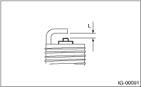

IGNITION(H4DO) > Spark Plug
Clean the spark plugs using a wire brush.
Clean and remove the carbon or oxide deposits. But do not wear away ceramic insulator at this time.
If deposits are too stubborn, replace the spark plugs.
After cleaning the spark plugs, measure the spark plug gap using a gap gauge.
NOTE:
Do not use a plug cleaner because the spark plugs are applied with iridium tip.
Spark plug gap: L
0.7 — 0.8 mm (0.028 — 0.031 in)
